URDF¶
本节用于说明从机械模型导出 URDF 模型的步骤
SolidWorks导出URDF¶
第一步：准备工作与插件安装¶
下载插件：从 ROS Wiki 获取 sw_urdf_exporter 插件。安装插件：下载后运行安装程序。安装完成后，重启 SolidWorks。
第二步：模型预处理¶
打开一个装配体模型为每个活动关节（旋转或平移）定义好参考几何体。从参考几何中按照点，坐标系，基准轴的顺序，针对每一个关节模组（活动部位）都需要配置。
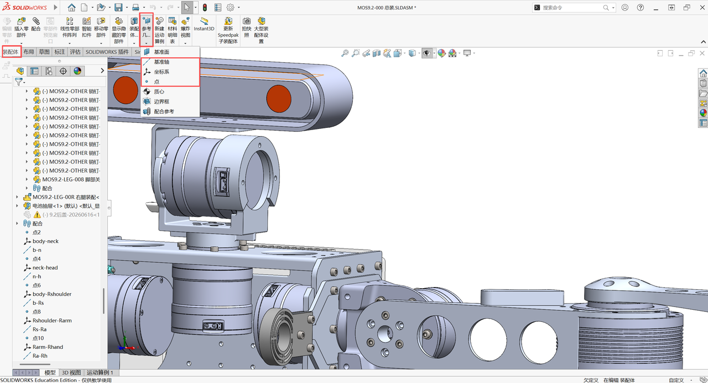
选择点：选择面中心后选择关节旋转/平移中心的一个面作为坐标系的原点
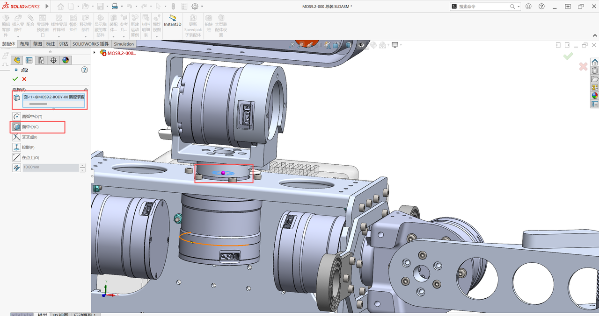
然后创建坐标系：
先选原点：选择上一步创建的“点”。然后定义 Z 轴：必须与关节的旋转轴或平移轴对齐。这是 URDF 标准的要求（旋转关节绕 Z 轴旋转，平移关节沿 Z 轴移动）。
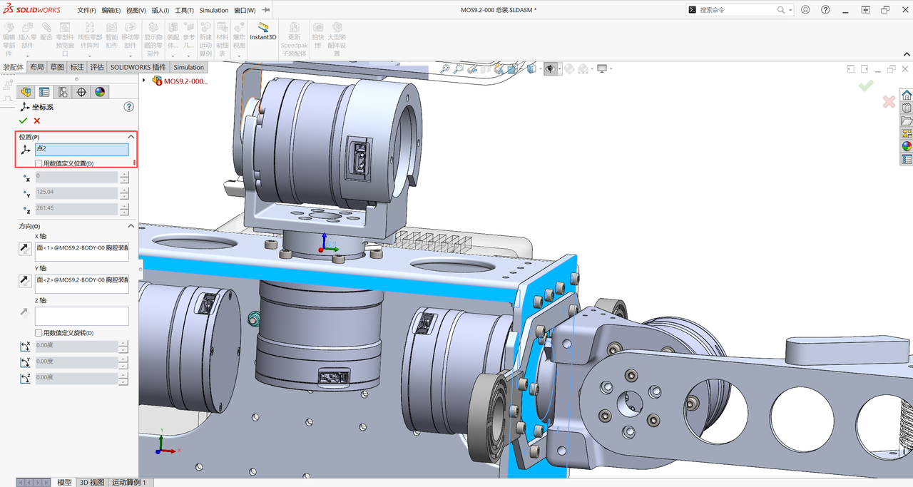
基准轴：选择上一步创建的“坐标系”的 Z 轴。这将在导出插件中用于定义关节轴
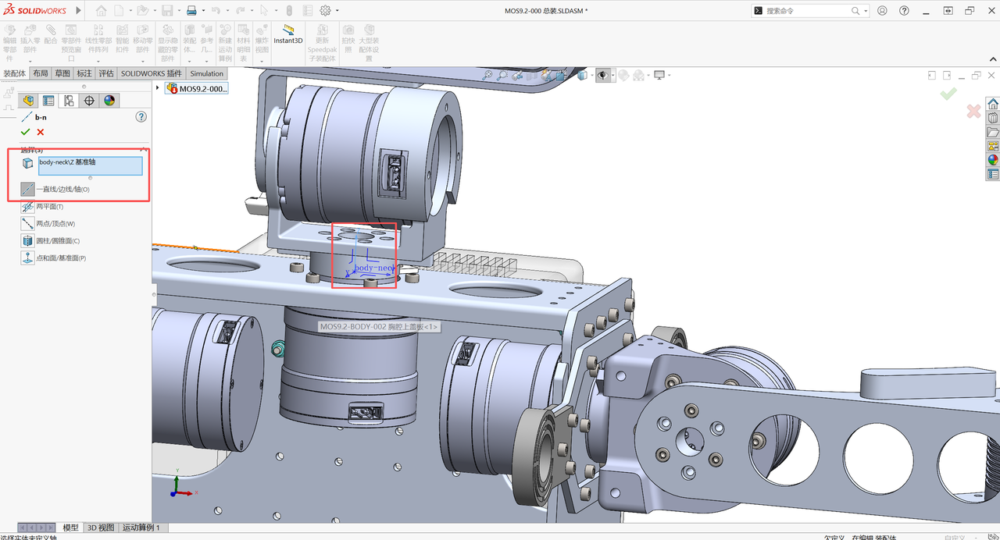
命名规范：为所有创建的参考几何体使用清晰、一致的命名。
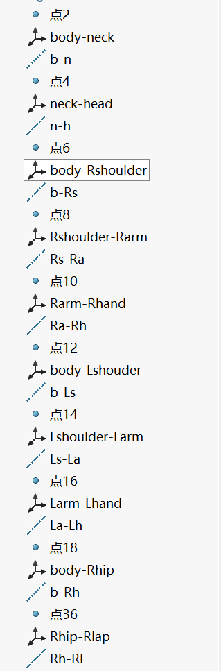
第三步：配置 URDF 导出插件¶
启动插件：在 SolidWorks 中，点击 工具 (Tools) -> Export as URDF。
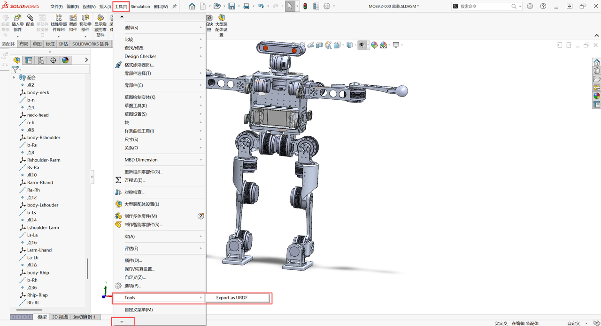
定义基座连杆 (Base Link)：
- Link Name: 为机器人的基座命名，如 base_link。
- Coordinate System: 选择机器人整体的参考坐标系（通常是世界坐标系或基座中心）。
- Parts: 选中所有与基座相对静止的零件。
- Children: 填写从基座延伸出的分支数量（例如，一个双臂机器人，基座连接着头、左臂、右臂，则数量为 3）。
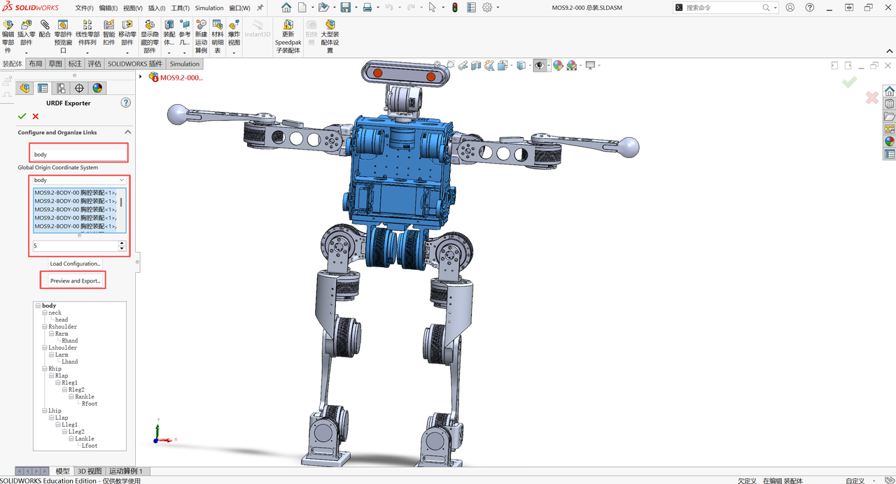
配置每个连杆和关节 (Configure Links and Joints)：
按照树状结构，逐个配置每个分支。
- Link Name: 为当前连杆命名（如 neck）。
- Reference Coordinate System: 选择第二步中为该关节创建的“坐标系”。
- Joint Name: 为关节命名（如 neck_joint）。
- Joint Type: 选择关节类型（revolute 旋转, continuous 连续旋转, prismatic 平移，fixed 固定）。
- Axis: 选择第二步中为该关节创建的“基准轴”。
重复此步骤，直到配置完所有连杆和关节。
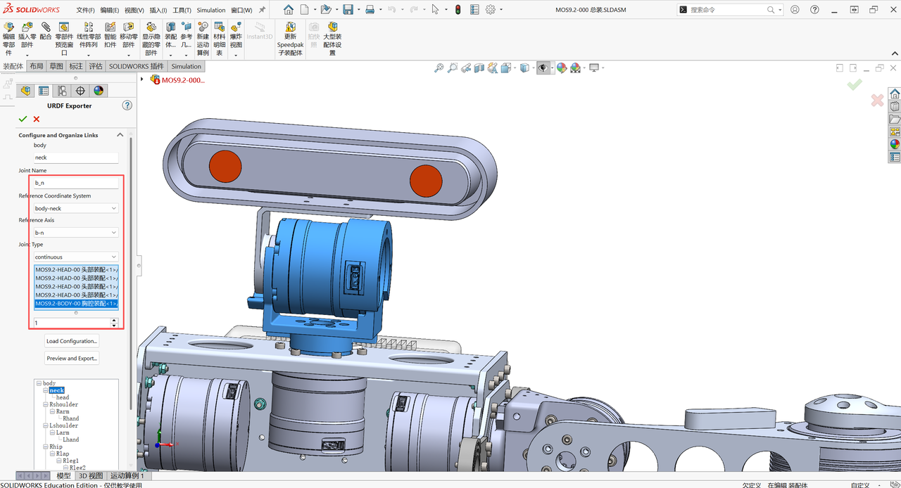
第四步：检查和修正物理属性¶
重要提示：此步骤可以在打开导出插件前或后进行，但强烈建议在导出前完成。
计算单个连杆的质量属性：
- 在 SolidWorks 中，取消所有零件的选择。
- 在左侧设计树或图形区域中，仅选中构成单个连杆（例如 neck）的所有零件。
- 点击 评估 (Evaluate) 选项卡中的 质量属性 (Mass Properties)。
- 点击 重算 (Recompute)。
- 记录并填写数据：
- 在弹出的窗口中，记录下 质量 (Mass)、质心 (Center of Mass) 和 惯性主轴/惯性张量 (Moments of Inertia) 的数据。
- 回到 URDF 导出插件的 Configure Link Properties 页面，将记录的数据手动填写到对应连杆的属性框中。
- 注意单位：确保单位统一（通常为 kg 和 m）。
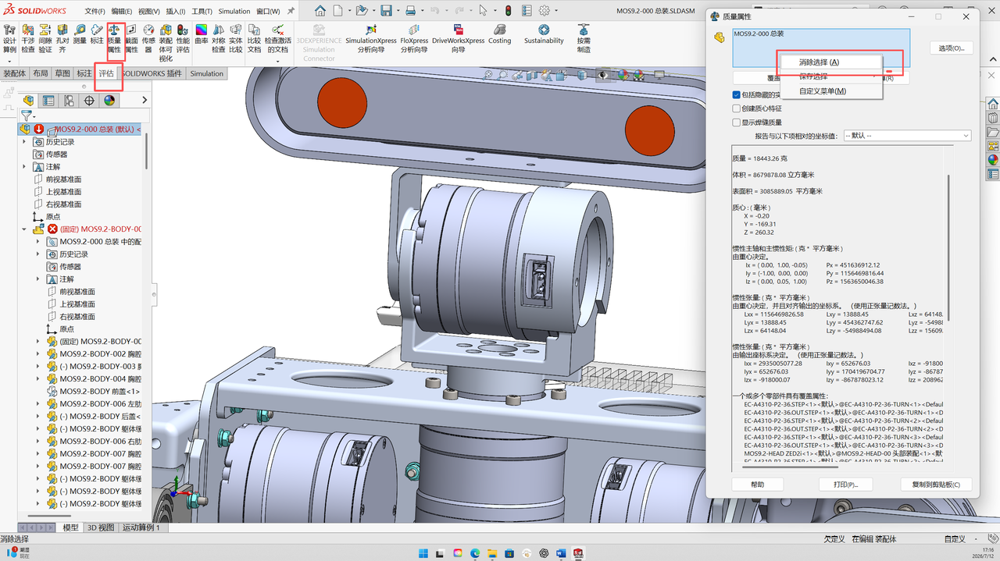
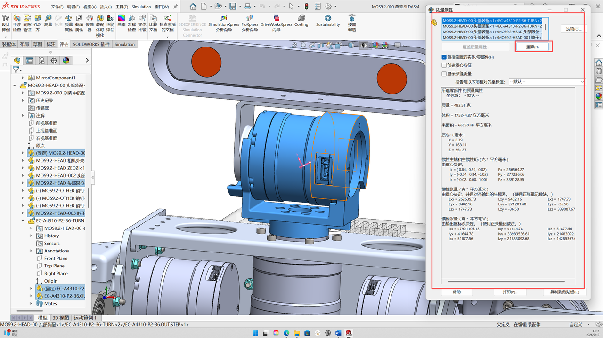
第五步：预览与导出¶
- 预览 (Preview)：点击 Preview and Export 按钮。
- 检查关节属性 (Configure Joint Properties)：
- 在弹出的窗口中，可以再次检查每个关节的坐标系、轴向和类型。
- 可以为旋转关节设置 Limits (位置、速度、力矩限制)。
- 检查连杆属性 (Configure Link Properties)：
- 再次确认每个连杆的质量、质心、惯性矩
- 导出 (Export)：
- 点击 Export URDF and Meshes。
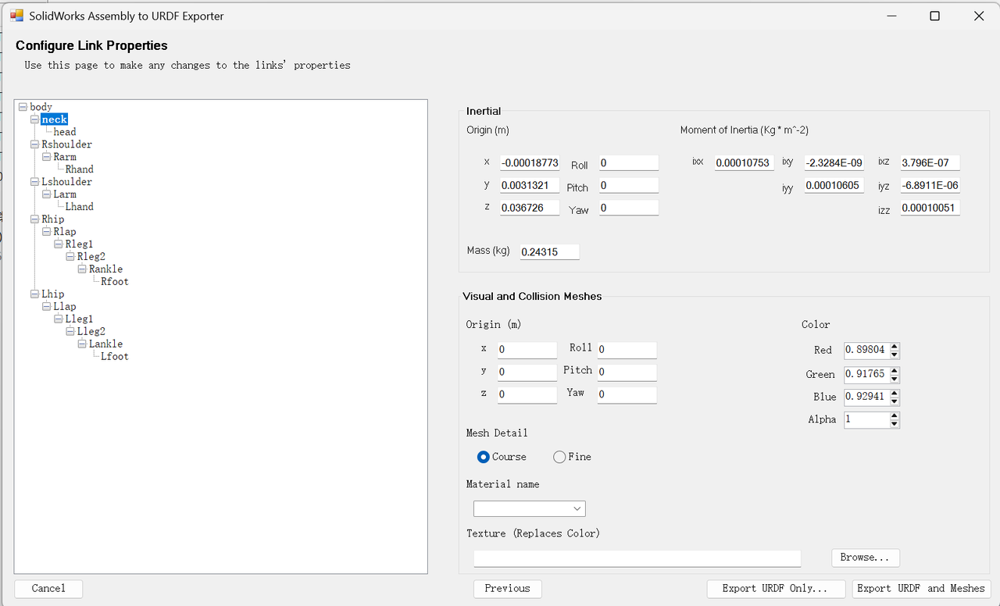
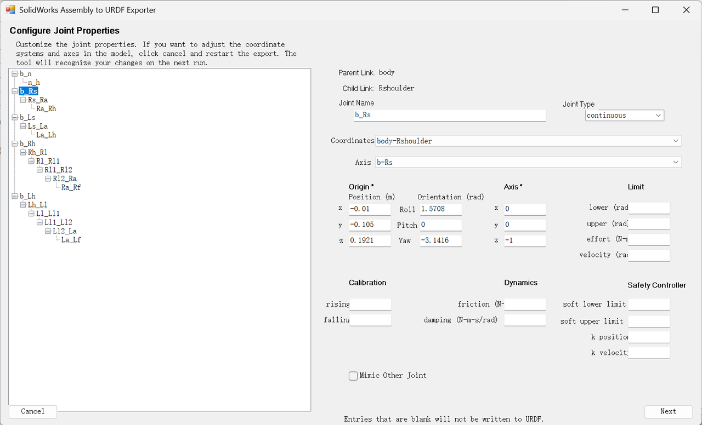
修改碰撞体¶
因为机器人仿真器中机器人刚体模型通过mesh来表达，mesh是由很多小三角形拼出来的机器人三维表面模型。在SolidWorks导出出来的精细模型三角面非常多，这样会导致仿真计算非常慢，所以通常导出出来模型之后会修改碰撞体，用简化的碰撞体比如长方体、圆柱体、球体等仿真容易计算的几何体来替代原来复杂的mesh。实际上对于机器人来说，把碰撞体简化不会对控制器Sim2Real效果影响太多。
关于修改碰撞体或关节限位，可以通过URDF Studio或VsCode插件来操作。
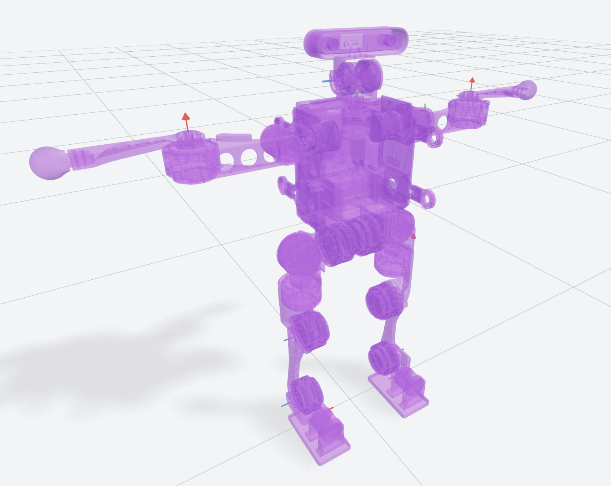
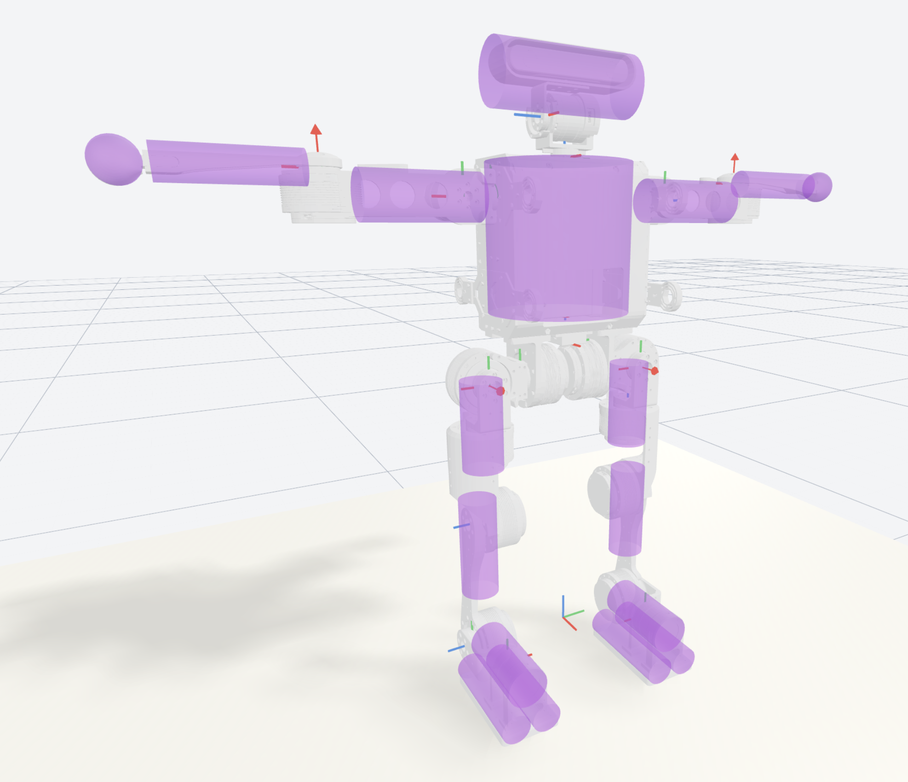
身体、手臂、大小腿等直接修改成差不多大小的圆柱体即可，与地面碰撞的部分需要精细设计一下，尤其是脚底的碰撞。脚底碰撞处理有几种方法：平行圆柱、长方体、四点足，我们这里采用平行圆柱。平行圆柱的碰撞类似之前的平板足部碰撞体，能保持仿真的准确性。
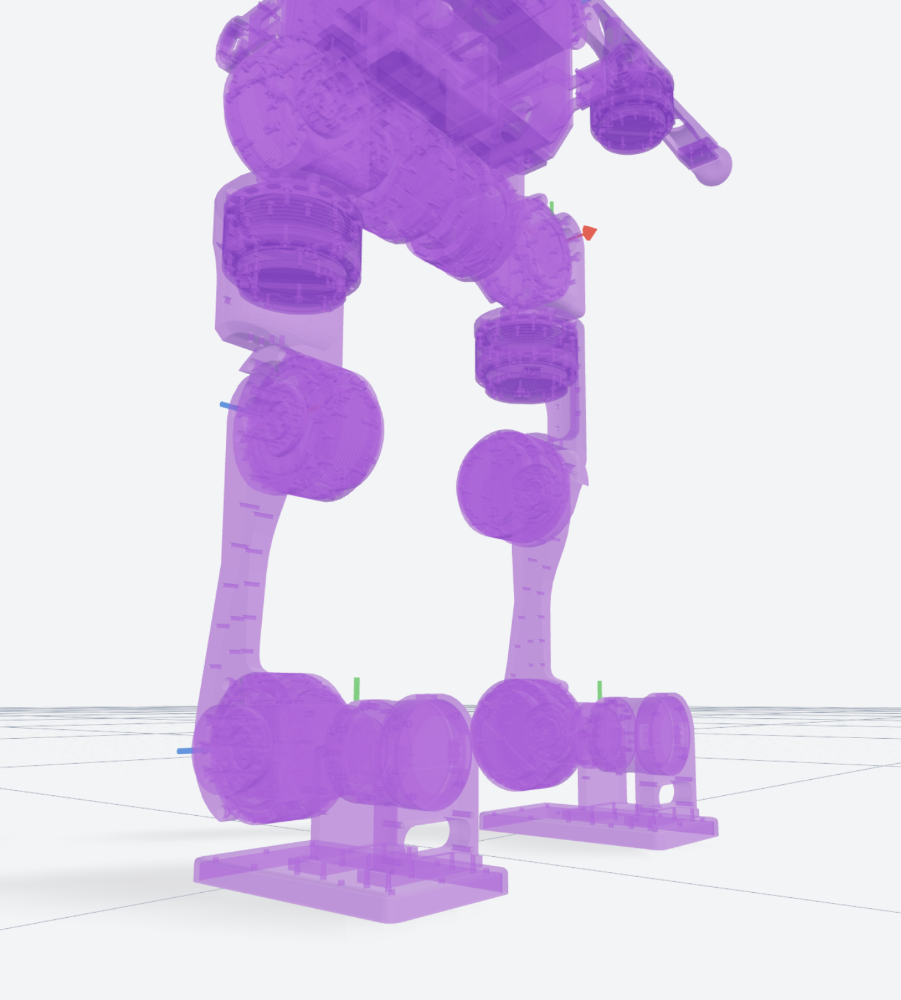
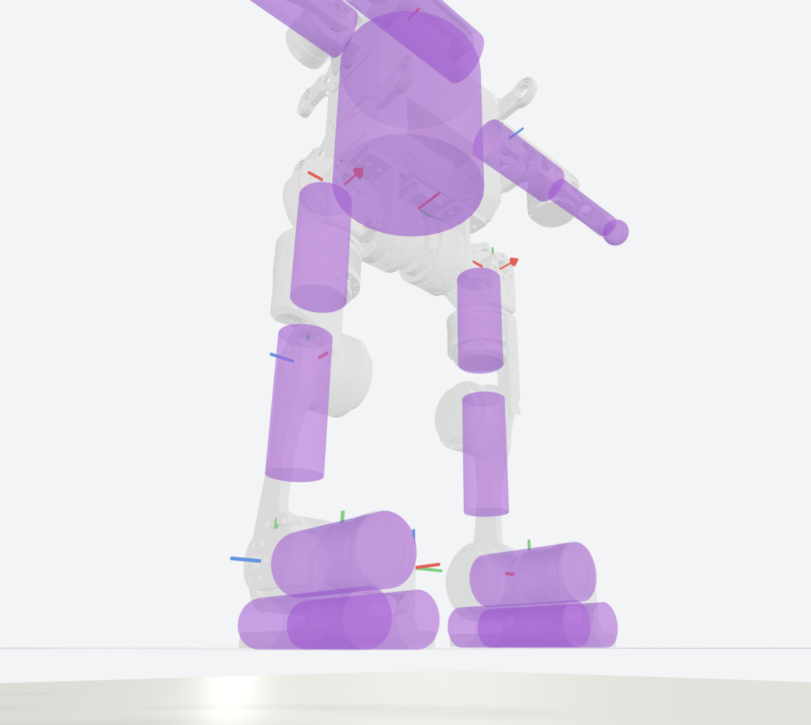
例如如下代码，将足部原来的mesh碰撞体改为三圆柱碰撞体：
<link name="Rfoot">
<inertial>
<origin xyz="0 -0.0233 0.02403" rpy="0 0 0" />
<mass value="0.67876" />
<inertia
ixx="0.00137339124"
ixy="-2.033E-08"
ixz="-1.7E-10"
iyy="0.00101905647"
iyz="-0.0002676393"
izz="0.00088815706" />
</inertial>
<visual>
<origin xyz="0 0 0" rpy="0 0 0" />
<geometry>
<mesh filename="../meshes/Rfoot.STL" />
</geometry>
<material name="">
<color rgba="1 1 1 1" />
</material>
</visual>
<!-- 修改前碰撞体
<collision>
<geometry>
<mesh filename="../meshes/Rfoot.STL" />
</geometry>
</collision>
-->
<!-- 修改后碰撞体 -->
<collision>
<origin xyz="0 0 0" rpy="0 0 0" />
<geometry>
<cylinder radius="0.03" length="0.13" />
</geometry>
</collision>
<collision>
<origin xyz="0.024 -0.052 -0.005" rpy="0 0 0" />
<geometry>
<cylinder radius="0.022" length="0.16" />
</geometry>
</collision>
<collision>
<origin xyz="-0.024 -0.052 -0.005" rpy="0 0 0" />
<geometry>
<cylinder radius="0.022" length="0.16" />
</geometry>
</collision>
</link>
修改关节限位¶
在URDF Studio中查看完整碰撞体模型，旋转各个关节，最后读取最大旋转位置写入URDF即可
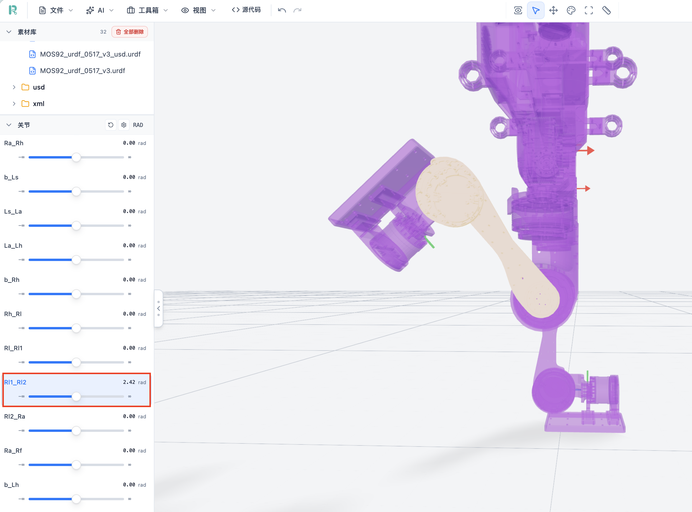
将关节限位写入URDF：
<joint name="right_knee" type="revolute">
<origin xyz="-0.00900000000000004 0 -0.146"
rpy="1.5707963267949 0 -1.5707963267949" />
<parent link="Rleg1" />
<child link="Rleg2" />
<axis xyz="0 0 -1" />
<limit lower="-1.0" upper="2.3" />
</joint>
这里虽然图片中最大位置2.42都可以，但是我们限制的更严格，最大位置给2.3，这个可以根据需求随意修改。